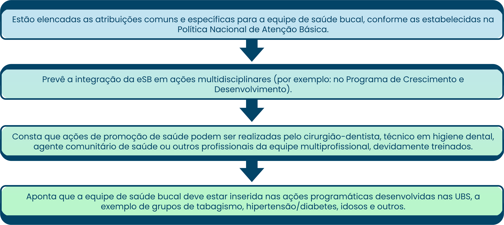

TÓPICO 02
O TRABALHO COLABORATIVO E INTERPROFISSIONAL NA APS
TÓPICO 02
O TRABALHO COLABORATIVO E INTERPROFISSIONAL NA APS
Com relação a normativas elaboradas especificamente para a saúde bucal, podemos mencionar o Protocolo de Odontologia na Atenção Primária (Portaria Distrital SES/DF nº. 287/2016). Para além do objeto norteador voltado para as especificidades da área, vamos apontar alguns elementos dispostos nesse documento que podem ser de interesse para o gestor, ao pensar o trabalho integrado entre eSF e eSB:
